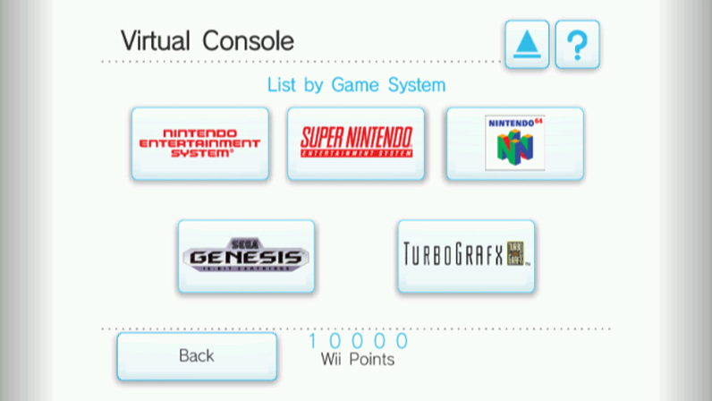

Video Game Preservation: Protecting History and Understanding Significance
Intro
Subjects
Losses
Saves
Methods
Video games are a part of human culture that has been around for over forty years and that is not going to change anytime in the foreseeable future. Despite this, video games are in dire need of preservation for cultural and historical study. Games and their related materials are in danger of becoming lost, largely as a result of being newer and far more complex medium than that of other cultural artifacts such as music, literature and film. I will be using this site to explain in more detail the struggles of preserving the history of this medium.
When it comes to preserving Video game history, there is more than just preserving the final games themselves, though that of course is of absolute importance. Video games or as sometimes referred to as “electronic” or “computer” games, are just that an electronic medium for the purpose of entertainment, a game. A product of the twentieth century’s advances, video games are created and played through processes more complicated than older artforms; video games are software that exists digitally on whatever medium they were created for. Software is developed for a platform that exists at a given time and often becomes obsolete when the hardware is replaced with newer more advanced hardware. As older software is replaced with one built for newer hardware, it will become increasingly difficult to run said software on the newest hardware. This process of course also applies to video games, however as games are created for entertainment rather than utility, they aren’t typically replaced the way something like a computer application would be. When a video game console is replaced by a newer console, the expectation is that said new console will focus on playing its own library of new games designed specifically for it. As gaming hardware evolves, more and more games are left behind with the older hardware, with only a select few being rereleased on later platforms.
There are a number of different reasons a game may not be rereleased later but a large one is due to the efforts needed to get a game running properly on a platform that it was not originally designed for often being seen as not sufficiently profitable to the companies that own them. In the case of older games, the companies may have lost the original source code used to create game and without that there is generally two ways to bring a game over to a new platform: either emulate the game or completely recreate the game from scratch, with neither option being ideal. With emulation one must create a facsimile of the environment that originally ran that game which can prove difficult in producing a one hundred percent accurate experience. Of course, recreating a game from scratch is impractical when the goal is to preserve original in both form and function. If the entirety of the original source code is intact and available, altering and compiling the code for a newer platform is a significantly easier method of rereleasing a game. Source code to a game is of the utmost importance to ensuring that a game will forever be playable, the problem is that in many cases the source code the various games have been lost by companies that created it; and this was especially the case earlier in the life of the medium.
The source code, as well as a host of other materials we will discuss shortly, have ended up endangered due to practices by the companies that created them, especially for games created in the 1980’s and earlier. As this was during the medium’s infancy videogames were seen as a product to sell to the consumer and then followed by another to sell, as such care was not really given by most companies in regards to how their materials were handled after the final product was shipped. Developers, publishers, and other related companies held all sorts of materials at various points of development and production and what happened to these materials after changing hands when needed is often unclear when attention is only given to such things when they are to progress. Materials may be transferred to one office branch for their use and they may remain there after the final product is released, if the material in question isn’t actively being utilized it may end up being stored away in some company building and forgotten about by management. The uncertainties in business, especially when the medium was young, meant that some offices may be closed down for one reason or another and the employees that would know about the materials being laid off or transferred elsewhere; if the people who were last handling these artifacts are no longer involved with the company then such things may end up misplaced, sold off, or even discarded as trash altogether.
There is a lot that goes into the production of a video game, not just the source code and final product. Developers go through many processes before they achieve the end result, they produce numerous documents relating to the product. Design documents that show how layouts within the game should look, concept art for characters and other aspects of the games’ world, storyboards and other documents showing how they planned their development out. Such documents are invaluable not only for being indicative of the history of a game’s creation, but also can be highly useful as a point of reference game design and development for the future generations. As a tool of education, these documents can illustrate how or why a developer did one thing the way did or the process a team used to make a game come to fruition. By preserving the history of video game development processes we will be able to better understand what does and doesn’t work and educate future developers so they may be able to avoid certain pitfalls that one may encounter when making a game, they may even be able to find a great source of inspiration from these old documents. Concept artwork and designs show what was at one point considered for the game’s world and perhaps may be repurposed for a future game somewhere down the road. By looking at old concept art we may see how things changed from early drafts to the final game. Looking at what was designed prior to the game being completed should be able to demonstrate how what was chosen fits in the grand scheme of the final game while possibly granting insight into why certain elements were not present in the end result.
While it is one thing to ensure that a video game remains in a completely playable state for the sake of posterity, it is an entirely different matter to retain a game playable in the exact state as it was originally on its original hardware. While Emulation and porting are both major ways to ensure a game remains accessible, it is through playing a game on the original hardware it was designed and released for, that we can experience and study the subtle differences present in the game when played through later methods. When games are played in a manner differently from how they were originally intended the various changes include: audio sounding different, graphics appearing differently, frame rate variance, the absence of existing or introduction new glitches, among other technical details. of Being able to compare how a game originally performed with later alternative hardware allows us to gain insight into not only the inner workings of the game itself but also the hardware and environment used to run it; this can prove quite useful for developers, of both games and hardware, as well as players alike. In order to preserve the history of video games there is hardware that also must be preserved and studied for future reference. While over time the hardware breaks down and decays rendering it unusable, this mandates the replacement and restoration of parts to maintain usability, though this will be impractical in the long term as parts no longer are produced. Due to this unavoidable obsolescence, it is rather imperative to record quality footage of games being run on their original hardware, having archives of authentic gameplay will provide at least some useful reference points on how games originally ran regardless of the loss of the hardware. Despite the immense difficulties of doing so, it is still important to maintain the hardware used to play games, as these consoles are just as important to the history of the medium as the games, if not more so. Arcade games are a particularly difficult task due requiring maintenance on the cabinet, hardware, and software in order to maintain playability and appearance; more on this later. There are of course thousands upon thousands of games, but the hardware involved in running them is a much lower number to keep track of, even still there are numerous pieces to be preserved. While a game console may simple like a one and done type of thing to find, there are also color and design variations as well as more function based revisions to consider, such as the removal or addition of features, improvement of battery life or changes in screen function. Countless accessories have also been produced for game systems, most prominently being the various controllers used to play the games, some of which were specifically designed for certain titles. Maintaining a proper collection of the assorted hardware is also a crucial part of maintaining video game history.
Preserving the history of video games goes beyond just the development and playability of a game, games have their own cultural history as well. This culture of games arguably begins with the marketing materials created to promote the games as well as the materials created for production and post-production. Ideally, we should aim to preserve everything that possibly can be, especially for materials released with the game such as packaging, the manual and any extra goodies that may have been included depending on the game; while most modern release are kept in plastic case intended to be reused, many older cartridge based games were sold in cardboard packaging that most did not keep. Advertisements created to promote games are also important to archive for future reference. These ads are not only useful for showing how a game was attempted to be portrayed but also provide insight to the general culture of the time in which it was produced. Some ads left a very large impact on consumers and were often critical in determining the success of a game as well as the public’s perception of said games. Marketing materials can range from the expected television commercials that could be recorded and archived relatively easily when found to the printed ads of magazines and newspapers that require more care to properly save and copy to the more specialized materials that may be much more difficult to acquire years later such as standees and limited time swag. Gaming magazines are another related material significant to the culture surrounding video games, from previews of then upcoming games, to tips and tricks, to reviews and first impressions, to interviews with the industry, to fan responses held there within; gaming magazines are not unlike a snapshot of the time they were published. Lastly with regards to specific promotional/release materials, are the official strategy guides. Once far more common before widespread internet use narrowed them down to just the most big name game releases, these guides featured an in-depth look at their respective games providing much help to the struggling player, though on occasion there may have been a mistake or two which may have led to rumors or myths building up around that game, this too is another interesting aspect of gaming history that should be saved. Some guides in particular offered qualities illustrations for the game among its pages, maps being especially useful and prominent in such guides.
Ultimately though, the biggest thing about gaming culture are the games themselves, if a game is not readily available to be played that is the biggest loss. All games, for better or worse, should be preserved with playability intact. While many titles have been rereleased on later platforms, there are far more that have not left their original platform. In an ideal world, all games would be available to play on modern platforms in a completely official capacity, however that is of course nigh impossible from a legal standpoint as many titles have had licenses expire or their owners go defunct resulting in an unclear ownership. Even if we were to simply focus on games existing on their original hardware, there are numerous games that are rendered unplayable or noticeably impaired/lacking features the game began with. Many older medium games utilized batteries of the use of maintaining a game save or internal clock, when that battery dies the player’s save data is lost for good; while possible in some cases to replace such a battery doing so will not restore the save that has been lost and this will eventually have to be done again in the future. However, all things eventually break down and one day even the best maintained of cartridges and disks will not be able to function and it will be impossible to play these games on the original hardware. To that end these games can only truly be preserved permanently through constant effort far beyond how these games were originally envisioned. Some may argue that many games are just mediocre and effort should not be expended on preserving them, however allowing opinions like that to influence historical preservation is dangerous and risks skewing the record away from reality. We must consider that even the most questionable of games may have been an important step for a developer that would create something absolutely amazing in the future and it is important to keep such records of their work.
Another troubling aspect of ensuring that a game is playable comes from the implementation of the internet into not just the game itself but also the game making process. It is without a doubt that internet has allowed for some amazing things to be done even within the context of video games, but it also complicates matters even further in regard to video game preservation. In the past all games were distributed through physical medium but the advent of the internet allowed for exceptions to that rule and as of writing this there are many more games that are being released in a digital only manner from online marketplaces with fewer physical releases. Now if everything that was released online only was permanently available this wouldn’t be a huge problem, but these marketplaces require servers and frequent maintenance in order to function. Online marketplaces specifically tied to game consoles will all eventually run into the same problem: it is not practical from a business perspective to spend the resources keeping the servers running for a platform that they are no longer marketing. If support for the platform’s marketplace is completely dropped, user will no longer be able to purchase or download these titles that only existed digitally. Games that only exist through digital distribution are also at the mercy of both the company running the marketplace and the owner of the game’s licensing. This is more commonly seen with games that are based on a license that originates from outside video games, such as a movie, comic, or television show, but when the publisher’s license to utilize another’s intellectual property expires that game is typically removed from online storefronts. When this occurs, there will be no official means to play these games. A game could be discreetly removed from the online storefront for a myriad of different reasons and that game may as well be considered lost. When it comes to online servers, marketplaces aren’t the only thing that may eventually be discarded when the benefits of upkeeping them outweigh the costs of doing so, online gaming in general makes heavy use of servers for all sorts of gameplay features. There are many games in which the main draw of the game is the online mode, players all over the world often competing or cooperating, this is only possible due to the game’s functional servers. If these servers are discontinued than the games can no longer be played like this and one of a game’s big features may as well have been stripped from the game, for a game that is only online multiplayer it is practically unplayable. Servers are important in the modern age of gaming, online functionality is also how games are updated; many games receive patches for one reason or another: glitches, bugs, and performance issues are often fixed through online updates, balancing issues are also adjusted in some games, and most notably is additional content added past the base game are added through such updates. If a platforms online support is completely dropped these things will almost certainly become unavailable and preserving them is a difficult proposition due to the means that would be required. Even if one has a physical game and the console that plays it, they may not be able to experience the “completed” game.
All these things are important to the history of video games and yet many of these are have been lost, destroyed, or forgotten with even more being at that risk currently. Japan’s “Great Hanshin Earthquake” of January 17th 1995 resulted in Konami losing a large portion of the artwork they created for the Original Castlevania among other things; the full extent of the losses from that disaster are publicly unknown due to Konami’s tight lipped policies regarding their internal affairs, this is not an uncommon policy among Japanese Game Developers. The original source code for the classic game “Dragon’s Lair” was lost due to obsolescence striking the media it was stored on, Digital Leisure went to tremendous effort working with outside parties in order to recreate the game, something that does not often happen with old games. Digital leisure’s other acquired laserdisc properties have had difficult to rerelease due to the sources having been lost and ownership of other materials being unclear. Long standing developer Taito has lost a large portion of promotional materials over time with the stuff from their earliest years having been most at risk due to a lack of proper storage procedures prior to the nineties, Capcom similarly lacked protocol for handling materials. Matters of preservation of video games are generally not the highest priority of companies within the industry, this in part related to cultural perception earlier on of video games simply being toys to sell, while this mindset has largely disappeared another ideology has enveloped the gaming culture. Nowadays especially, both the video game industry and the consumers have been absorbed into this philosophy of timeliness in which a new game is produced, for a short time that game is what is relevant, and then that all stops in favor of the next big title; we see some developers rush to get a game out at certain points, and players quickly discarding their games once their done with them, usually selling them to buy new ones, a practice only encouraged by certain companies. Gameboy and Gameboy Color game cartridges utilize a special battery to save player data, as do a select handful of certain Gameboy Advance titles, as of 2020 most original save batteries have died out, so playing longer games such as Pokemon titles or other Role Playing Games on the original hardware is difficult without outright replacing the battery. Magnetic media such as floppy discs lose their orientation over time and cease to hold their stored information, games on such platforms need to be transferred to newer mediums or will simply disappear. We also should consider unreleased games and demos which while an important part of gaming history are often forgotten about, those not backed up digitally will be likely be lost to the public forever. These tech demos and prototypes may end forgotten in a company’s storage, potentially discarded, or end up for auction to collectors who only are concerned with the monetary value such a thing would have, this applies to both software and hardware. Take into consideration Earthbound 64 from Nintendo Space World 1999, which would later become Mother 3 for the Gameboy Advance, or the early Super Nintendo prototype of Final Fantasy 7, little is known of what became of these prototypes and public access to them would be excellent for historical preservation.
The mass digital market has brought with it thousands of games of all types, many exclusive to digital format with no physical release to speak of. No where else is this more true than that of the digital marketplace of mobile devices, games are released with the intention of them being played on the average smartphone. Mobile games are added to places such as the google play store with such reckless abandon and quite frankly horrifying frequency with little in the way of proper curation to ensure the developer has actually created a finished product and not simply stolen assets and slapped them onto a preexisting template or even just republishing the same app with little or no changes in order to abuse the ad revenue provided on the platform. Regardless of nonresistant quality control, there are still things worth preserving, but mobile games are at a large risk due to a combination of the visibility and the fact that things may just be removed from the app store without warning. Mobile games are typically tied to a user’s account which would wiped when replacing their phone, thus finding old lost phone games on device found at a second hand goods shop is not something that can be relied on for the backing up of games digitally. The Nintendo Wi-Fi Connection, the service Nintendo used to run the online features for their Nintendo DS and Nintendo Wii titles, is arguably the biggest example of online infrastructure ceasing to be due to changes in the company. Nintendo Wi-Fi Connection was operated on servers by a company called GameSpy which was known for running such online servers, GameSpy was eventually bought out and all multiplayer servers shutdown. While Nintendo wasn’t the only company whose games were affected by the shutdown, they were the ones most reliant on the servers and did not migrate to new servers leaving all prior online features unusable with the exception of the Nintendo Wii Shop Channel which they ran on their own servers. It can be of surprising difficulty to determine if something has been lost as generally only those involved in the production of a given game would be able to have ready access to the materials that one would expect, so much more could have been completely lost and most would never know due to some companies’ tight lipped policies. In terms of ensuring any given game is playable on a at least one modern platform, there are thousands of games that their owners may simply not bother with for one reason or another so it is a shorter list of games that are officially playable in that way.
When it comes to ensuring that a game is playable on modern platforms, there are a number of different approaches taken by various companies who do rerelease older games in their back-catalog. One method of rereleasing older games is through compilation titles, which typically follow a particular theme most often either within a particular franchise of games or a set of games by a particular developer or publisher. Compilation titles have been around for decades as the offer of having multiple games in one package is considered quite appealing, especially for older titles that may not be enticing enough to be rereleased at retail for full price on their own. For arcade and early console titles, compilations are a good way to sell such games as many of them are simpler titles that are often appealing to a more niche demographic, adding multiple titles to a release allows for a greater value which may convince consumers that wouldn’t have considered buying a single title on its own. Compilations have been put out for titles from studios such Sega, Capcom, Intellivision, Taito, Midway Games, Atari and SNK, among others. Aside from compilations, companies have also rereleased titles on the modern platforms through their respective digital storefronts, this is far more common in recent years than a physical compilation release, though digital compilations are also released. Depending on the company, these rereleases are often given a certain branding to distinguish them from newer modern releases. Nintendo released many legacy titles under the “Virtual Console” label, eventually offering hundreds of titles not only from Nintendo’s platforms but also other platforms from the 1980s and 90s. Virtual Console titles were release on the Nintendo Wii, Nintendo 3DS and the Wii U, with some title only be releasing on one or two of these platforms; Game Boy/Color and Sega Game Gear titles only appearing on 3DS, Game Boy Advance and Nintendo DS titles only appearing on the Wii U, and the Wii offering Sega Master System and Genesis, TurboGrafx-16, Commodore 64, and Neo-Geo titles as well as a small selection of Arcade titles. Unfortunately, with the official shutdown of the Wii Shop Channel the Virtual Console titles on that platform can no longer be purchased. The Nintendo Switch offers a selection of NES and SNES titles for those with an active Switch Online subscription, though the titles offered through this service are merely a fraction of the titles previously available on their previous platforms Virtual Console, as of writing this the E-shops of 3DS and Wii U still offer Virtual Console titles.


Unused FFXIII Sprites

Unused Designs for FFXIII

Early design cocuments for FFX
In terms of artifacts being saved we have several instances of code being backed up or documents and other artifacts being located after the passage of time. Taito has managed to transfer some of its software to newer more secure hardware while also preserving some of their arcade circuit boards. Throwback Entertainment built a datacenter specifically in order to properly manage and store the source code of the numerous tile they acquired from Acclaim Entertainment. After Mattel auctioned off various assets from the Original Intellivision, Keith Robinson of Intellivision Productions hunted down the floppy disk drives containing the source code and after contacting the manufacturing company was able to successfully transfer the code to newer media; these games were later made playable through the compilation title “Intellivision Lives” which also included a handful of previously unreleased titles. Microsoft cites having departments specifically for the storing of materials and to act in accordance with their Business Continuity and Disaster Recovery program they enacted plans to transfer games produced before 2000 to newer hardware. Nintendo explains that they have retained at least some design documents from the NES era and use them as reference and inspiration for modern development. The Atari Corporation sold numerous file cabinets many containing important artifacts without checking them, the person who bought one which held the source code of over 80 titles, returned the code once she realized the importance of what she had. Another had bought 44 cabinets which included 2000 or so pieces of artwork, designs, manuals, marketing materials and so forth; he wished to hold onto these until someone could buy them for a single archive. Konami managed save some Metal Gear design documents after the Hanshin Earthquake. Interestingly, developer Volition actually released the ISO for their cancelled PSP title Saints Row Undercover.

"Modern" Link

Artwork from the e3 reveal

Cover art for Famitsu magazine

Twitter Promotional Images
Sometimes copies of artwork or illustrations from previous development and promotion are compiled and included within a product, the usual places are either a video game or a book; these inclusions do a good job at showing that materials such as artwork are at least being preserved internally by their owners. When it’s a game to include such things they are typically displayed as bonus content that may or may not require being unlocked before viewing; if the material is specifically for the game itself it is usually concept art, when material is included from preexisting games promotional materials are just likely to be included. Materials from development and promotion may end up in books which may be a compendium or encyclopedia on a particular game or franchise, alternatively and perhaps more commonly in recent years there are also artbooks which contain almost exclusively the artwork of a given game or series. Books such as these are an excellent to help preserve certain parts of video game history and culture. The Final Fantasy Ultimania Archive books, translated into English by Dark Horse Books, contain numerous art pieces from production of the first fourteen mainline entries of the Final Fantasy franchise, distributed over 3 volumes. In particular I’ve decided to highlight page 291 of volume 3 which features a storyboard for Final Fantasy XIII’s Odin Summoning. There are also designs and concept art not featured in the final game on pages 314-317, from these we can see ideas that were considered for FFXIII but ultimately not part of the end vision. Pages 94 and 95 features images and notes from system planning during the development of Final Fantasy X, we can see how things changed from here to the final game. From volume 1 of the Ultimania Archives, we can see documents from the development of the original Final Fantasy (text digitally translated for the English market) on page 34. Dark Horse also published the Legend of Zelda compendium and art books which provide not only artwork but also notes from the developers that grant insight into the production of the series. The book, Creating a Champion, in particular focuses on Legend of Zelda: Breath of the Wild a more recent title helping to preserve its legacy while still fresh. Concept art from earlier in development includes a more “modern” take on the character of Link not seen in the final game, which can be found on page 63. Among the “Key Art” featured from pages 8-39 is artwork produced specifically for outside the game such multiple E3 showings, magazine covers, and Twitter promotions. Also featured are interviews with development team made after production was completed. Page 169 features some illustrations of weapons and tools with notations on how they should be implemented.
When it comes to the preservation of video games and their related materials, there has never been a universal standard to follow, within the industry or otherwise. The wide array of related materials that encompass games culture and history requires just as many different methods in order to be maintained and preserved. In order for materials to be preserved they must first be located, acquiring materials that were produced for consumers is one thing that may be simple enough as finding intact pieces if enough were originally produced, however materials exclusively possessed by studios, developers, publishers, advertisers and etc. would be far more difficult acquire. Many artifacts having been accidently sold, trashed, or misplaced can require extensive research and cooperation with other parties in order to locate; if you can find the last person known to have had access to the items it may still be possible to retrieve them even if they have changed hands. Many artifacts have laid dormant in storage or in former employees’ unknowing homes, establishing networking with various former and current workers of the game industry to seek out any forgotten materials they may still have and have them do the same for their own contacts. A particularly troublesome obstacle for tracking down gaming artifacts is existence of especially greedy collectors unwilling to allow access to one of a kind items without paying an overly excessive amount, this is especially bad when it comes to the code or even playable games that were never given permanent public release and these current owners are unwilling to allow such games to have their ROMs backed up for future posterity as they want it to maintain absolute monetary value. While simply acquiring such things is an arduous task in and of itself, simply collecting them is not sufficient to actually preserve them as each material needs to be maintained and or backed up. Hardware is especially impermanent as such regular maintenance and repairs are needed to keep them functional as long as possible. The Strong National Museum of Play is among the more prolific organizations involved with video games preservation and the three upcoming facilities they have planned each illustrate important aspects of video game preservation. Strong’s planned Arcade Game Conservation Lab will allow them the resources needed to effectively maintain their growing collection of arcade machines which currently number over 300, arcade games are particularly at high risk due to being designed for custom hardware housed within the cabinets. Strong’s second planned facility is a Digital Preservation Hub which allow them to better preserve games for the future utilizing specialized in order digitally back up each game within a playable form, a far more difficult task than one may first imagine due to the multitude of platforms and environments needed to run these games properly. Strong’s blog mentions by name tools called “Applesauce” and “Kyroflux” that they use in order to preserve the legacy of the Apple II the games of which utilize media that will suffer from bit rot and render them otherwise lost. This digital hub will also be used capture footage of games being run on their original hardware which will become more difficult to do in the future as obsolescence strikes more platforms. Last of Strong’s planned video game based expansions is the ICHEG Access and Research Center, while the first two facilities’ purpose is carried out primarily internally, this facility is to allow outside researchers access to the history that Strong has collected and compiled giving them practical use as an archive for video games.
While Strong largely focuses on the games themselves, another organization working hard to preserve the legacy of games is The Video Game History Foundation. The Foundation’s primary focus is the preservation of material such as artwork, packaging, documents, manuals, interviews and even reviews as well as code. As they wish to allow for reasons and responses behind games to be studied, they collect such material and work to digitize them into high quality scans when applicable and back them up. The Foundation seeks to transfer such materials from older volatile media over to new more stable media. The endgame of the Video Game History Foundation is the creation of their “Digital Library” which is to be an online repository of verifiable resources that can be freely accessed for research and education. As the foundation also wishes to educate people on why video game preservation matters, they make blog posts on their site detailing various matters they deal with; they demonstrate numerous artifacts of varying natures and the stories behind them and why they are important. While the Foundation does keep a reference library of mostly books and magazines, they emphasize that they are not a museum and once they have completed digitizing an artifact they donate it to another group suited for permanent residence, such as the Strong Museum of Play, the National Videogame Museum, the Smithsonian Art Museum, and the Library of Congress.
The use of emulators and ROMs are quite controversial within the gaming industry, especially to certain companies, while in many cases such things are necessary in for a game to remain playable to world as there are often no way for most to play these games through official means either as a result of the property being held by a defunct company or one unwilling/able to rerelease the title. As of October 1018, The library of congress in conjunction with the U.S. Copyright office determined that some exemptions could be made to the Digital Media Copyright Act with regards to the preservation of videogames. This was done after much argument from archivists that wish to see all of the medium preserved and publishers who want to prevent others from potentially profiting from their copyrighted properties. It was determined that such archives could back legally possessed local and server code to these games. In order for these games to be playable it must be through a physical institution such as a library or a museum. However acquiring server code legally is not something that happens regularly as it is something that would need to be given directly from the owners which are often at odds with the preservationists and for certain games where online features have since become defunct, they may not even have such code anymore. These stipulations are fair enough for the preservation of single player titles, but any game where the focus is largely the online play is likely to be incomplete especially with regards to MMOs whose official servers shutdown years before hand. While certain online games have private servers set up by fans after official support was dropped, these were established largely through means that lie outside of terms laid out in the exemptions made here. Realistically speaking, emulation carried through out unofficial parties are going to be the ones responsible for preserving many games win their playable form.